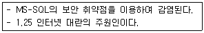
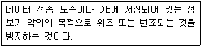
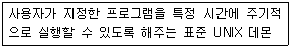
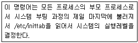

인터넷보안전문가-2급 (2006-09-24 기출문제)
1과목: 정보보호개론
1. 다음 중 암호 시스템의 일반적인 세 가지 충족 요건으로 옳지 않은 것은?
- 암호화키에 의하여 암호화 및 복호화가 효과적으로 이루어져야 한다.
- 암호화키는 반드시 블록화 되어야 한다.
- 암호 시스템은 사용이 용이하여야 한다.
- 암호화 알고리즘 자체 보다는 암호키에 의해 보안이 이루어져야 한다.
(정답률: 알수없음)

2. SET(Secure Electronic Transaction)의 기술구조에 대한 설명으로 옳지 않은 것은?
- SET은 기본적으로 X.509 전자증명서에 기술적인 기반을 두고 있다.
- SET에서 제공하는 인터넷에서의 안전성을 모두 암호화에 기반을 두고 있고, 이 암호화 기술은 제 3자가 해독하기가 거의 불가능하다.
- 암호화 알고리즘에는 공개키 암호 시스템이 사용된다.
- 이 방식은 n명이 인터넷상에서 서로 비밀통신을 할 경우 “n(n-1)/2” 개 키를 안전하게 관리해야 하는 문제점이 있다.
(정답률: 알수없음)
3. 공개키 암호와 관용 암호를 비교한 설명 중 옳지 않은 것은?
- 관용 암호에서는 암호화와 복호화에 동일한 알고리즘이 이용되지만, 공개키 암호에서는 하나의 키는 암호화, 다른 하나는 복호화에 이용하는 알고리즘을 이용한다.
- 관용 암호에서는 키가 절대적으로 비밀이 유지가 되어야 하나, 공개키 암호에서는 두 개의 키 중에서 개인 비밀키의 보안이 유지되면 된다.
- 관용 암호의 대표적인 예로 DES, IDEA 등을 들 수 있으며, 공개키 암호의 대표적인 예로 RSA, RC4 등을 들 수 있다.
- 관용 암호의 가장 큰 단점은 계산 시간이 많이 소요된다는 사실이고, 공개키 암호의 가장 큰 단점은 사용이 불편하다는 점이다.
(정답률: 알수없음)
4. 암호화의 목적은?
- 정보의 보안 유지
- 정보의 전송
- 정보의 교류
- 정보의 전달
(정답률: 알수없음)
5. 사이버 공간 상에서 사용자의 신원을 증명하기 위한 인증 방식으로 이용하는 정보의 종류로 옳지 않은 것은?
- 자신이 알고 있는 것(패스워드)
- 자신이 소지하는 것(스마트 카드)
- 자신이 선천적으로 가지고 있는 것(지문 등의 생체 정보)
- 사진과 수기 서명의 그림 파일
(정답률: 알수없음)
6. 문서 내용의 무결성을 확인하는 절차에 해당하는 것은?
- 신원확인
- 인증
- 발신자 부인 봉쇄
- 검증
(정답률: 알수없음)
7. 다음은 어떠한 바이러스에 대한 설명인가?

- DoS
- 트로이 목마
- Worm.SQL.Slammer
- Nimda
(정답률: 알수없음)
8. 다음 내용은 무엇을 설명하는 것인가?

- 기밀성(Confidentiality)
- 무결성(Integrity)
- 인증(Authentication)
- 부인 방지(Non-Repudiation)
(정답률: 알수없음)
9. 다음 보안과 관련된 용어의 정의나 설명으로 옳지 않은 것은?
- 프락시 서버(Proxy Server) - 내부 클라이언트를 대신하여 외부의 서버에 대해 행동하는 프로그램 서버
- 패킷(Packet) - 인터넷이나 네트워크상에서 데이터 전송을 위해 처리되는 기본 단위로 모든 인터페이스에서 항상 16KB의 단위로 처리
- 이중 네트워크 호스트(Dual-Homed Host) - 최소한 두 개의 네트워크 인터페이스를 가진 범용 컴퓨터 시스템
- 호스트(Host) - 네트워크에 연결된 컴퓨터 시스템
(정답률: 알수없음)
10. 인터넷에서 일어날 수 있는 대표적인 보안사고 유형으로 어떤 침입 행위를 시도하기 위해 일정기간 위장한 상태를 유지하며, 코드 형태로 시스템의 특정 프로그램 내부에 존재 하는 것은?
- 논리 폭탄
- 웜
- 트로이 목마
- 잠입
(정답률: 알수없음)
2과목: 운영체제
11. File 시스템에서 FAT와 NTFS에 대한 설명으로 옳지 않은 것은?
- 설치 프로그램을 활용하면 FAT나 FAT32를 쉽게 NTFS로 변환이 가능하다.
- Convert.exe를 사용하여 설치 후에 변경할 수 있으며 Convert [드라이브:]/fs:NTFS 로 변환한다.
- NTFS에서 FAT로의 변환이 가능하다.
- NTFS는 안전성, 보안성이 FAT보다 우수하다.
(정답률: 알수없음)
12. 다음 중 Windows 2000 Server에서 감사정책을 설정하고 기록을 남길 수 있는 그룹은?
- Administrators
- Security Operators
- Backup Operators
- Audit Operators
(정답률: 알수없음)
13. Linux의 Fdisk 명령어에서 Disk의 명령어 리스트를 보여주는 것은?
- m
- d
- n
- t
(정답률: 알수없음)
14. Windows 2000 Server의 사용자 계정 중 해당 컴퓨터에만 사용되는 계정으로, 하나의 시스템에 로그인을 할 때 사용되는 계정은?
- 로컬 사용자 계정(Local User Account)
- 도메인 사용자 계정(Domain User Account)
- 내장된 사용자 계정(Built-In User Account)
- 글로벌 사용자 계정(Global User Account)
(정답률: 알수없음)
15. DHCP(Dynamic Host Configuration Protocol) 서버에서 이용할 수 있는 IP Address 할당 방법 중에서 DHCP 서버가 관리하는 IP 풀(Pool)에서 일정기간동안 IP Address를 빌려주는 방식은?
- 수동 할당
- 자동 할당
- 분할 할당
- 동적 할당
(정답률: 알수없음)
16. 웹사이트가 가지고 있는 도메인을 IP Address로 바꾸어 주는 서버는?
- WINS 서버
- FTP 서버
- DNS 서버
- IIS 서버
(정답률: 알수없음)
17. Windows 2000 Server에서 WWW 서비스에 대한 로그파일이 기록되는 디렉터리 위치는?
- %SystemRoot%\Temp
- %SystemRoot%\System\Logs
- %SystemRoot%\LogFiles
- %SystemRoot%\System32\LogFiles
(정답률: 알수없음)
18. Redhat Linux 시스템의 각 디렉터리 설명 중 옳지 않은 것은?
- /usr/X11R6 - X 윈도우의 시스템 파일들이 위치한다.
- /usr/include - C 언어의 헤더 파일들이 위치한다.
- /boot - LILO 설정 파일과 같은 부팅관련 파일들이 들어있다.
- /usr/bin - 실행 가능한 명령이 들어있다.
(정답률: 알수없음)
19. Linux의 root 암호를 잊어버려서 현재 root로 로그인을 할 수 없는 상태이다. Linux를 재설치하지 않고 root로 로그인할 수 있는 방법은?
- 일반유저로 로그인 한 후 /etc/securetty 파일 안에 저장된 root의 암호를 읽어서 root 로 로그인 한다.
- LILO프롬프트에서 [레이블명] single로 부팅한 후 passwd 명령으로 root의 암호를 변경한다.
- 일반유저로 로그인하여서 su 명령을 이용한다.
- 일반유저로 로그인 한 후 passwd root 명령을 내려서 root의 암호를 바꾼다.
(정답률: 알수없음)
20. Linux 시스템을 곧바로 재시작 하는 명령으로 옳지 않은 것은?
- shutdown -r now
- shutdown -r 0
- halt
- reboot
(정답률: 알수없음)
21. 다음 Linux 명령어 중에서 해당 사이트와의 통신 상태를 점검할 때 사용하는 명령어는?
- who
- w
- finger
- ping
(정답률: 알수없음)
22. Linux에서 "ls -al" 명령에 의하여 출력되는 정보로 옳지 않은 것은?
- 파일의 접근허가 모드
- 파일 이름
- 소유자명, 그룹명
- 파일의 소유권이 변경된 시간
(정답률: 84%)
23. VI 편집기에서 수정하던 파일을 저장하지 않고 종료 시키는 명령은?
- :q!
- :w!
- :WQ!
- :Wq!
(정답률: 알수없음)
24. 다음 중 파일 a.c와 파일 b.c를 압축된 파일 aa.tar.gz로 묶는 명령어는?
- tar -cvf aa.tar.gz a.c b.c
- tar -zv aa.tar.gz a.c b.c
- tar -czvf aa.tar.gz a.c b.c
- tar -vf aa.tar.gz a.c b.c
(정답률: 알수없음)
25. Linux 파일 시스템의 기본 구조 중 파일에 관한 중요한 정보를 싣는 곳은?
- 부트 블록
- i-node 테이블
- 슈퍼 블록
- 실린더 그룹 블록
(정답률: 알수없음)
26. 다음이 설명하는 데몬은?

- crond
- atd
- gpm
- amd
(정답률: 알수없음)
27. 다음은 어떤 명령어에 대한 설명인가?

- runlevel
- init
- nice
- halt
(정답률: 알수없음)
28. 다음 명령어 중에서 X Windows를 실행시키는 명령은?
- xwin
- startx
- playx
- runx
(정답률: 알수없음)
29. Linux 커널 2.2.부터는 Smurf 공격 방지를 위해 ICMP 브로드캐스트 기능을 막는 기능이 있다. 이 기능을 활성화시키기 위한 명령으로 올바른 것은?
- echo "1" > /proc/sys/net/ipv4/icmp_echo_broadcast_ignore
- echo "1" > /proc/sys/net/ipv4/icmp_echo_ignore_all
- echo "1" > /proc/sys/net/ipv4/icmp_echo_ignore_broadcasts
- echo "1" > /proc/sys/net/ipv4/icmp_ignore_broadcasts
(정답률: 알수없음)
30. 아파치 데몬으로 웹서버를 운영하고자 할 때 반드시 선택해야하는 데몬은?
- httpd
- dhcpd
- webd
- mysqld
(정답률: 알수없음)
3과목: 네트워크
31. Fast Ethernet의 주요 토플로지로 가장 올바른 것은?
- Bus 방식
- Star 방식
- Cascade 방식
- Tri 방식
(정답률: 알수없음)
32. 음성 신호 24 채널을 포함하고 있고, 신호의 속도가 1.544Mbps 인 북미 방식 신호는?
- DS-0
- DS-1
- DS-2
- DS-3
(정답률: 25%)
33. X.25 프로토콜에서 회선 설정, 데이터 교환, 회선 종단 단계를 가지며, 패킷의 종단간(End-to-End) 패킷 전송을 위해 사용되는 방식은?
- 데이터 그램 방식
- 회선 교환 방식
- 메시지 교환 방식
- 가상회선 방식
(정답률: 알수없음)
34. HDLC 프로토콜에서 주국(Primary Station)과 종국(Secondary Station)의 관계이면서, 종국이 주국의 허락 하에만 데이터를 전송할 수 있는 통신 모드는?
- 정규 응답 모드(NRM : Normal Response Mode)
- 비동기 응답모드(ARM: Asynchronous Response Mode)
- 비동기 균형 모드(ABM: Asynchronous Balanced Mode)
- 혼합 모드(Combined Mode)
(정답률: 알수없음)
35. Star Topology에 대한 설명 중 올바른 것은?
- 메인서버나 라우터를 중심으로 별모양의 네트워크를 구성한다.
- 케이블은 10BaseT, 100BaseT의 UTP 케이블과 씬넷(BNC) 케이블을 쓴다.
- 연결된 PC 중 하나가 다운되어도 전체 네트워크 기능은 수행된다.
- 라인의 양쪽 끝에 터미네이터를 연결해 주어야 한다.
(정답률: 알수없음)
36. 프로토콜명과 그 설명으로 옳지 않은 것은?
- Telnet - 인터넷을 통해 다른 곳에 있는 시스템에 로그온 할 수 있다
- IPX/SPX - 인터넷상에서 화상채팅, 화상회의를 하기 위한 프로토콜이다
- HTTP - HTML 문서를 전송하고, 다른 문서들과 이어준다.
- POP3 - 인터넷을 통한 이메일을 수신하는 표준 프로토콜이다.
(정답률: 알수없음)
37. 네트워크 전송매체에 대한 설명으로 옳지 않은 것은?
- UTP - 쉴딩(Shielding) 처리를 하지 않고 내부의 선이 꼬여 있는 형태이다.
- STP - UTP와 달리 내부의 8개 선에 피복이 입혀져 있지 않다.
- Thinnet BNC - BNC라는 커넥터가 씬넷(Thinnet) 케이블에 연결되어 있는 형태로 보통 씬넷 케이블 또는 BNC 케이블이라고 부른다.
- Optical Fiber - 케이블 중앙에 유리섬유 코어나 플라스틱 코어가 있고 맨 바깥에 플라스틱 피복이 입혀져 있다.
(정답률: 알수없음)
38. 일반적으로 인터넷 도메인 네임을 구성하는 요소로 옳지 않은 것은?
- 사용자 계정(ID)
- 기관의 이름
- 기관의 성격
- 나라 표시
(정답률: 알수없음)
39. OSI 7 Layer 모델에 대한 설명으로 옳지 않은 것은?
- 물리 계층 : 케이블의 전기적, 광학적, 기계적, 기능적인 인터페이스 제공
- 데이터 링크 계층 : 에러 제어, 흐름 제어, 접속 제어 기능 제공
- 네트워크 계층 : 두 네트워크를 연결하는데 필요한 데이터 전송 및 교환 기능
- 표현 계층 : 응용 프로그램에 통신 기능 제공
(정답률: 알수없음)
40. 네트워크를 관리 모니터링 하는데 사용되는 프로토콜은?
- FTP
- HTTP
- IP
- SNMP
(정답률: 알수없음)
41. 다음 프로토콜 중 상호관계가 가장 없는 하나는?
- IP
- X.25
- X.500
- UDP
(정답률: 알수없음)
42. IPv4에 비하여 IPv6이 개선된 설명으로 옳지 않은 것은?
- 128bit 구조를 가지기 때문에 기존의 32bit 보다 더 많은 노드를 가질 수 있다.
- 전역방송(Broad Cast)가 가능하다.
- IPv6에서는 확장이 자유로운 가변길이 변수로 이루어진 옵션 필드 부분 때문에 융통성이 발휘된다.
- IPv6에서는 Loose Routing과 Strict Routing의 두 가지 옵션을 가지고 있다.
(정답률: 알수없음)
43. Telnet 서비스에 대한 설명 중 옳지 않은 것은?
- 일반적으로 25번 포트를 사용하여 연결이 이루어진다.
- 인터넷 프로토콜 구조로 볼 때 TCP상에서 동작한다.
- 네트워크 가상 터미널 프로토콜이라고 할 수 있다.
- Telnet 연결이 이루어지면, 일반적으로 Local Echo는 발생하지 않고 Remote Echo 방식으로 동작한다.
(정답률: 알수없음)
44. 패킷(Packet)에 있는 정보로 옳지 않은 것은?
- 출발지 IP Address
- TCP 프로토콜 종류
- 전송 데이터
- 목적지 IP Address
(정답률: 알수없음)
45. 인터넷에 접속된 호스트들은 인터넷 주소에 의해서 식별되지만 실질적인 통신은 물리적인 MAC Address를 얻어야 통신이 가능하다. 이를 위해 인터넷 주소를 물리적인 MAC Address로 변경해 주는 프로토콜은?
- IP(Internet Protocol)
- ARP(Address Resolution Protocol)
- DHCP(Dynamic Host Configuration Protocol)
- RIP(Routing Information Protocol)
(정답률: 알수없음)
4과목: 보안
46. Windows 2000 Server의 보안영역에는 각각 클라이언트 보안, 네트워크 보안, 물리적인 보안, 원격 액세스 보안, 인터넷 정책, 인적보안, 사용자 정책 등이 있다. 설명으로 옳지 않은 것은?
- 원격 액세스 보안 : 직접 원격 접속을 통한 인증되지 않은 액세스로부터 네트워크 시스템을 보호
- 클라이언트 보안 : 클라이언트 컴퓨터들을 인증된 사용 또는 인증되지 않는 사용자로부터 보호
- 네트워크 보안 : 외부인으로 부터 하드웨어 침입에 대비하여 물리적인 시스템 보호
- 물리적인 보안 : 네트워크 시스템들이 있는 컨테이너 공간, 설비들을 안전하게 관리
(정답률: 알수없음)
47. IFS 공격을 막기 위한 근본적인 방법은?
- 쉘 스크립트 실행 전 스크립트가 변경되지 않았는지 검사한다.
- 쉘 스크립트 내부에는 전체경로를 가진 절대 경로만 사용하도록 한다.
- 쉘 스크립트는 항상 setuid가 붙도록 한다.
- 일반 사용자가 환경변수를 설정 할 수 없도록 한다.
(정답률: 알수없음)
48. netstat -an 명령으로 시스템의 열린 포트를 확인한 결과 31337 포트가 Linux 상에 열려 있음을 확인하였다. 어떤 프로세스가 이 31337 포트를 열고 있는지 확인 할 수 있는 명령은?
- fuser
- nmblookup
- inetd
- lsof
(정답률: 알수없음)
49. Linux 파일 시스템에 대한 사용자에 속하지 않는 것은?
- 소유자 : 파일이나 디렉터리를 처음 만든 사람
- 사용자 : 현재 로그인한 사용자
- 그룹 : 사용자는 어느 특정 그룹에 속하며 이 그룹에 속한 다른 사람들을 포함
- 다른 사람들 : 현재 사용자 계정을 가진 모든 사람
(정답률: 알수없음)
50. 각 사용자의 가장 최근 로그인 시간을 기록하는 로그 파일은?
- cron
- messages
- netconf
- lastlog
(정답률: 알수없음)
51. 공격자가 호스트의 하드웨어나 소프트웨어 등을 무력하게 만들어 호스트에서 적법한 사용자의 서비스 요구를 거부하도록 만드는 일련의 행위는?
- 스푸핑
- DoS
- 트로이 목마
- Crack
(정답률: 알수없음)
52. 버퍼 오버플로우(Buffer Overflow)의 설명으로 옳지 않은 것은?
- 지정된 버퍼(Buffer)의 크기보다 더 많은 데이터를 입력해서 프로그램이 비정상적으로 동작하도록 만드는 것을 의미함
- 대부분의 경우 버퍼가 오버플로우 되면 프로그램이 비정상적으로 종료되면서 루트 권한을 획득할 수 있음
- 버퍼가 오버플로우 되는 순간에 사용자가 원하는 임의의 명령어를 수행시킬 수 있음
- 버퍼 오버플로우를 방지하기 위해서는 시스템에 최신 패치를 유지해야 함
(정답률: 알수없음)
53. TCP 프로토콜의 연결 설정을 위하여 3-Way Handshaking 의 취약점을 이용하여 실현되는 서비스 거부 공격은?
- Ping of Death
- 스푸핑(Spoofing)
- 패킷 스니핑(Packet Sniffing)
- SYN Flooding
(정답률: 알수없음)
54. DoS(Denial of Service) 공격과 관련 없는 내용은?
- 관리자 권한을 획득하여 데이터를 파괴할 수 있다.
- 한 예로 TearDrop 공격이 있다.
- 사용자의 실수로 발생할 수 있다.
- 공격의 원인이나 공격자를 추적하기 힘들다.
(정답률: 알수없음)
55. 침입탐지시스템에 대한 다음 설명 중 옳지 않은 것은?
- False Negative는 감소시키고 False Positive는 증가시켜야 한다.
- 침입탐지방식으로서 Misuse Detection, Anomaly Detection 으로 나뉜다.
- 공개된 IDS 제품으로 널리 알려진 Snort 는 Misuse Detection 기반이다.
- NFR은 Signature Filter 방식이다.
(정답률: 알수없음)
56. 다음 중 시스템 보안에서 자동 수행 검사의 방법에 대한 설명으로 올바른 것은?
- 방화벽 설치는 서브넷이나 호스트들을 보호하기 위하여 게이트웨이에 설치한다.
- 방화벽은 보안이라는 목표에 다가가기 위한 접근 방법이다.
- 라우터, 호스트 시스템들은 해커로부터 보호하기 위한 것이다.
- 방화벽의 보안 탐지도구는 Tropwire가 있으며 체크 썸 함수를 이용한다.
(정답률: 알수없음)
57. 방화벽의 세 가지 기본 기능으로 옳지 않은 것은?
- 패킷 필터링(Packet Filtering)
- NAT(Network Address Translation)
- VPN(Virtual Private Network)
- 로깅(Logging)
(정답률: 알수없음)
58. 침입차단시스템에 대한 설명 중 옳지 않은 것은?
- 침입차단시스템은 내부 사설망을 외부의 인터넷으로부터 보호하기 위한 장치이다.
- 패킷 필터링 침입차단시스템은 주로 발신지와 목적지 IP Address와 발신지와 목적지 포트 번호를 바탕으로 IP 패킷을 필터링한다.
- 침입차단시스템의 유형은 패킷 필터링(Packet Filtering) 라우터, 응용 레벨(Application Level) 게이트웨이, 그리고 회선 레벨(Circuit Level) 게이트웨이 방법 등이 있다.
- 침입차단시스템은 네트워크 사용에 대한 로깅과 통계자료를 제공할 수 없다.
(정답률: 알수없음)
59. SYN 플러딩 공격의 대응 방법으로 옳지 않은 것은?
- 빠른 응답을 위하여 백 로그 큐를 줄여 준다.
- ACK 프레임을 기다리는 타임아웃 타이머의 시간을 줄인다.
- 동일한 IP Address로부터 정해진 시간 내에 도착하는 일정 개수 이상의 SYN 요청은 무시한다.
- 리눅스의 경우, Syncookies 기능을 활성화한다.
(정답률: 알수없음)
60. 다음 중 SSL(Secure Socket Layer)의 개념으로 옳지 않은 것은?
- 연결시에 클라이언트와 서버는 전송중인 데이터를 암호화하기 위해 비밀키를 교환한다. 그러므로 도청되더라도 암호화 되어있어 쉽게 밝혀낼 수 없다.
- 클라이언트는 서버에게 접속시 인증서를 요구하고 자신의 비밀키를 이용한 암호화 방식으로 데이터를 암호화하여 전송하므로 스니핑의 방지가 가능하다.
- 공용키 암호화를 지원하기 때문에 RSA나 전자서명표준 같은 방법을 이용하여 사용자를 인증할 수 있다.
- MD5나 SHA같은 메시지 다이제스트 알고리즘을 통해서 현재 세션에 대한 무결성 검사를 할 수 있기 때문에 세션을 가로채는 것을 방지할 수 있다.
(정답률: 알수없음)
암호화키는 암호화 및 복호화를 위해 사용되는 중요한 요소이며, 이를 통해 보안성이 유지된다. 암호 시스템은 사용이 용이해야 하며, 암호화 알고리즘 자체보다는 암호키에 의해 보안이 이루어져야 한다는 것은 일반적인 암호 시스템의 요건이다.